About Us: Bharatiya Vidya Bhavan Kodagu Vidyalaya is one of the prominent and reputed CBSE Schools located in Siddapur Road at Madikeri in Kodagu the home district of LateField Marshal K.M. Cariappa.The school is authorized to educate the children from Class I to Class XII in English medium the school has a co-educational pattern the school follows syllabus prepared at Central Board of Secondary Education, New Delhi.
- Objective:
The institution strives to impart all-round and sound education leading to spiritual, intellectual, physical and cultural development of the child. The school curriculum provides opportunities for learning while cherishing the uniqueness and individuality of each child. The school environment fosters creative thinking, decision making, compassion, caring and respect for ourselves, other people and property
- Mission:
The school has a vast sports ground comprising of courts for all major sports events apart from tracks for athletics, facilities for indoor games is also provided, other co-scholastic activities likeRobotics, Carpentry, Automobiles, Photography, Yoga, dance, music, drama, etc have been conducted.
To Know about [QtPi Robotics] (https://www.qtpi.in/)
Bharatiya Vidya Bhavan Kodagu Vidyalaya School. Conducted a student science fair.
students also came up with innovative ideas and built projects such as automating their classroom lights, building an elephant security system and many more that would address local problems. Here are some visuals.
- Elephant Alarm
The Robotics Team BVKV has come up with a project named "Elephant Security". This project is to help the people, especially farmers who stay in Coorg . They are great sufferers of the onslaughts of elephants. The elephants enter their farms in search of food and destroy the farm. Our "Elephant security" project alerts the farmers before the elephants enter the farm. This project is done by the students of grades 7 and 10 . The project works by alerting the farmers of Kodagu district with the help of a buzzer thereby helping them to avoid the onslaughts by the elephants .
The "Elephant security" project alerts the farmers before elephants enter the farm thus loss of crop and life can be avoided . In this project ultrasonic sensors are installed across the boundaries(fence) of the farm, so that it can detect the movement of the elephant(s) within a specified distance, a buzzer(we can use RGB with a buzzer) is also used to alert the farmers.
If an elephant passes near the fence the ultrasonic sensor will detect and buzzer will alert us so that the farmers can take the necessary actions to avoid the menace.

The students who participated in this event were:
- Track Rc-race
Track Rc-race is a competition between 2 cars. It aims to be the first global championship for autonomous cars . Usually they have to beat other robots in order to become the best one.
Children enjoyed playing this race and parents were also very curious to know about this project. They had lots of fun playing this track rc race.
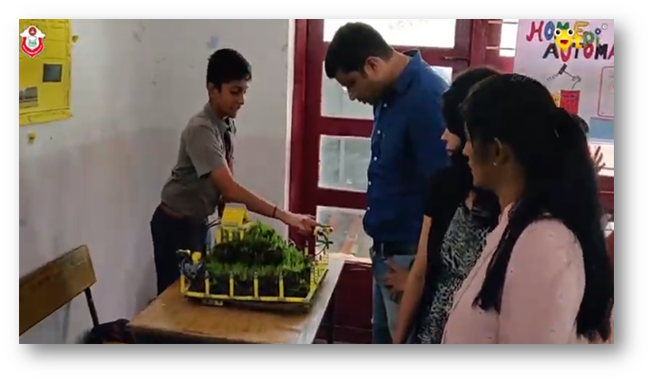 |
Curious parents enquiring about the working of the projects: Home Automation and Elephant Security
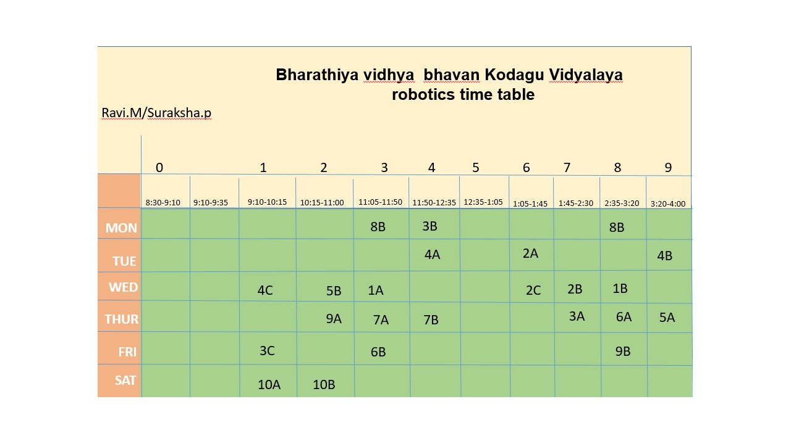
QtPi conducted a Badge Design Competition in July to identify QtSTAR Team and the winners from our school are:
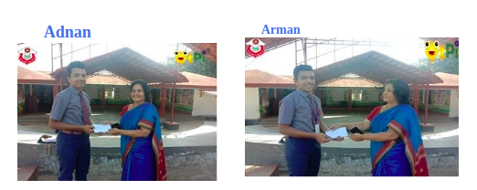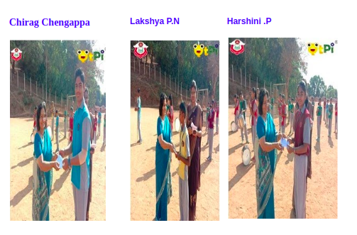
Star Teams for the Academic Year 2019-2020
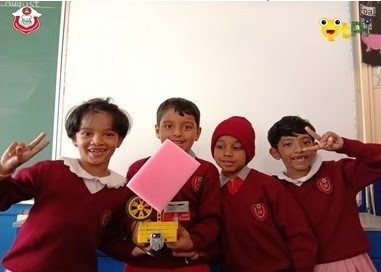
THAPASHA, MOURYA, TANAK BOPPANA, BOJAMMA
VIHAN, DANYAL, ASHNA AADYA
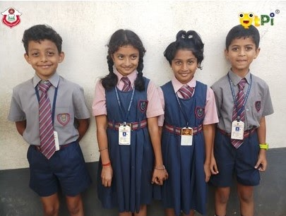
Aditya,Veeksha,Lakshya,Suheb
Aarcha,Dharmik,Dev chinnappa,Yashika
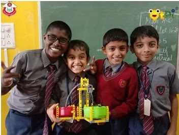
Manish,Raghu vamshi,nanaiah,Samay
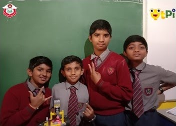
Daiwik,Dhawan,Jithesh karthik,Vishnu
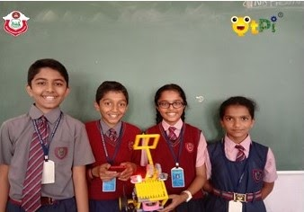
Amshul, Biddappa, Belaku, Sonal
Riddi, Sahana ,Sneha, Tanvika
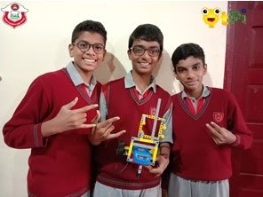
Darshan, jack paul, Abhishek
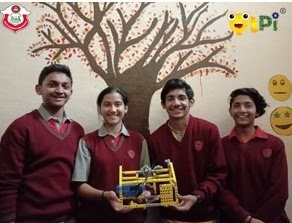
Arya,Dabayna,Sahal,Tejaswi
Childrens were very happy to participate in the quiz competition . It was a game to test the knowledge of how much they had understood the different projects that they had learned.
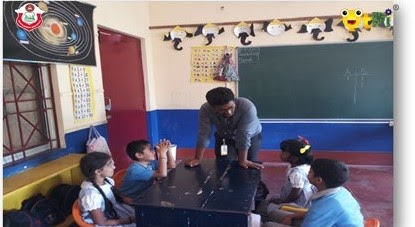
Children identifying the different types of blocks
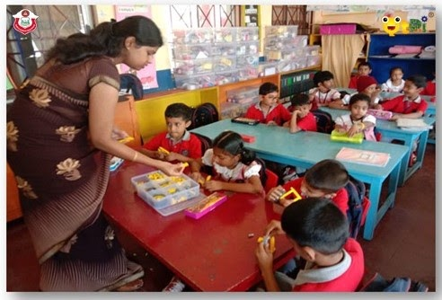
- SCIENCE FAIR
Bharatiya Vidya Bhavan Kodagu Vidyalaya conducted Avalokan Science Fair on October 5th 2019. Students displayed various robotic projects. For the first time, students created Elephant Security and Track RC car race. The people who all attended the science fair enjoyed playing with Track RC- race. Parents and teachers were very happy with the various presentations.
Projects Presented by the Students
· -Soccer Bot
· -Voting Machine
· -Track RC race
· -Elephant Security alarm
· -Smart Tap
· -Smart Street Light
Minister of Primary & Secondary Education and Sakala S. Suresh Kumar inaugurated AVALOKAN – SCIENCE FAIR and Robotics.
Minister of Primary & Secondary Education and Sakala S. Suresh Kumar inaugurating Robotics PROJECT
TWO Robot CARs ready to start RACING
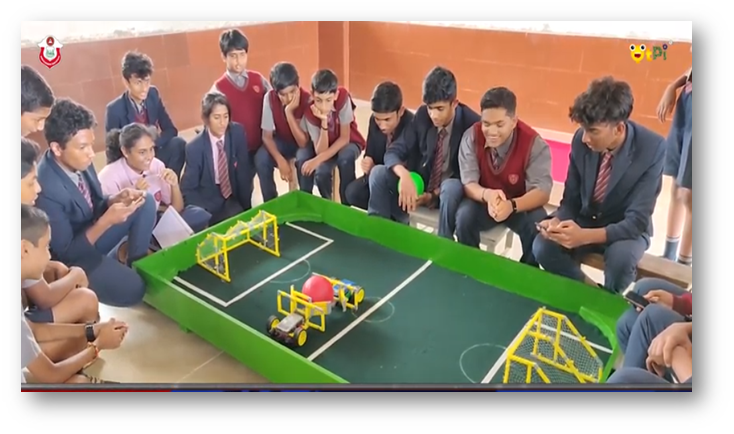
| 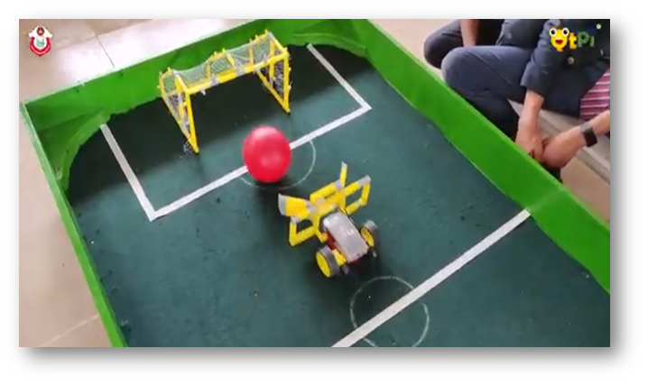
|
| |
| 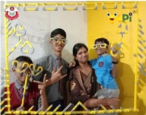
|
|

WALKING ROBOTS DONE BY CHILDREN
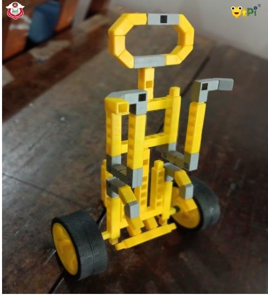
Lower grades busy building robot structure with Q bits
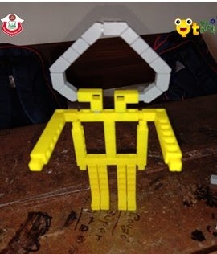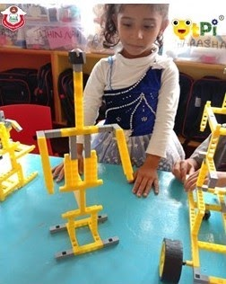
Walking scrubber with sprinkler made by eighth standard students.
Children display their creativity by drawing the structure of robot
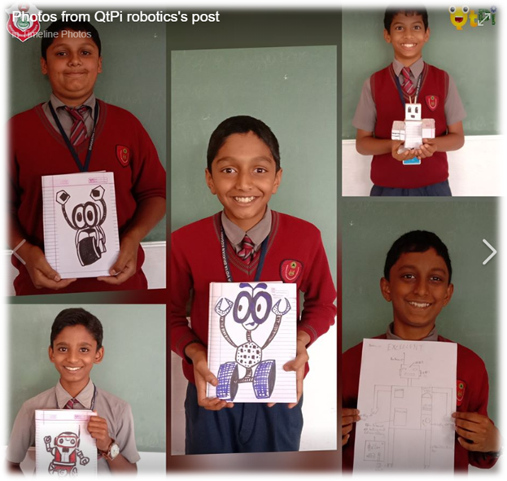
Robotics in schools can help the students in creative learning and innovation. Teaching robotics to students, teaching them how to persist and solve problems, improve logical and analytical thinking. It also helps them to prepare for real-world situations in design, application and operation of robots, and it is the foundation for topics such as computer programming, artificial intelligence or engineering design in this competitive world.
-Principal
BVBKV, Madikeri.
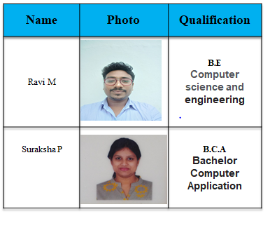
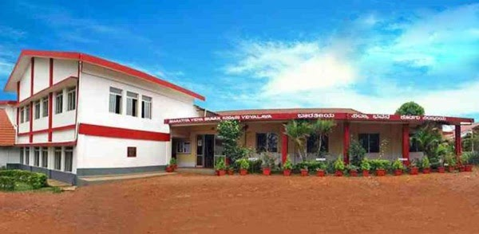
Bharathiya Vidya Bhavan Kodagu Vidyalaya
Siddapur Road, Madikeri, Karnataka 571201
Phone: 082722 25920 E-mail: coovidya@yahoo.com
Official Web Link: www.bhavankodaguvidyalaya.edu.in
|